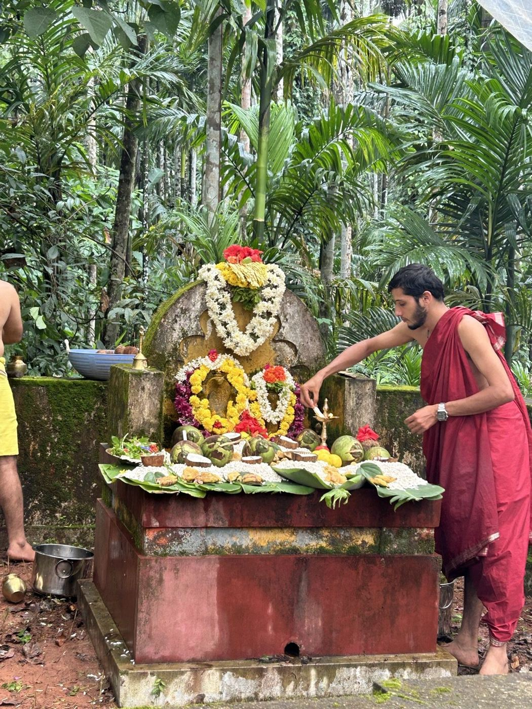
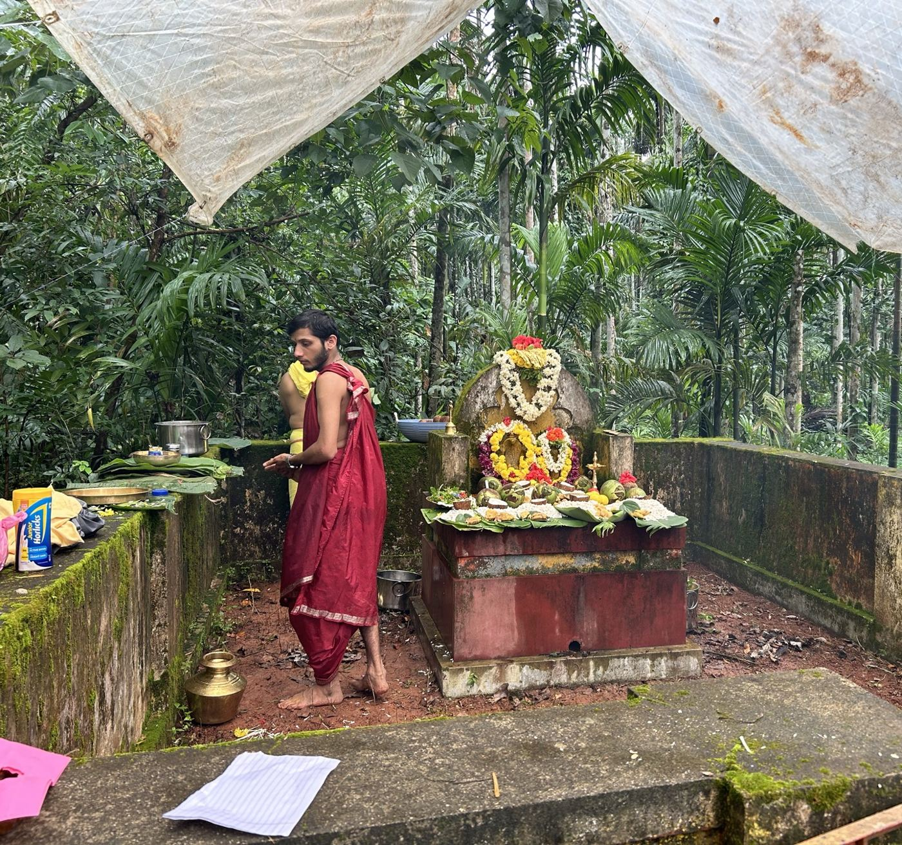

Nagara Panchami: The Forest We Never Cut
Almost every Tuluva family keeps a small patch of forest it will never clear, never build on, never touch. Not for want of land — because a god lives there. This is the story of the serpent's grove, and the day we go back to it.
When Aati ends — the lean, godless monsoon month — the festivals come back to Tulu Nadu one by one. And the very first of them belongs not to a grand deity in a grand temple, but to the snake. In the bright half of the month of Shravana, on its fifth day, comes Nagara Panchami — Naga Panchami — the worship of serpents.[1]
Across much of India that day means offering milk to snake idols and images.[1] On our coast it means something older and closer to the ground. Here, serpent worship — Nagaradhane — is one of the defining traditions of the land, standing beside spirit worship as the two great indigenous cults of Tulu Nadu.[2] And it doesn't happen in a temple. It happens in the trees.

The Nagabana
The place is called a Nagabana — literally the serpent's grove. It's a piece of forest deliberately left wild, believed to be the resting place of snakes, with carved naga stones set among the trees as the shrine.[2] There is a saying on the coast that is very nearly literally true: there is not a single Tuluva family that does not have a Nagabana.[2] Ours is a small patch of arecanut and forest, a moss-dark stone enclosure that has stood longer than anyone alive remembers.
Stop and consider what that means, structurally. An entire people, over centuries, each keeping a scrap of untouched forest — not as a park, not as policy, but as an obligation to a god. You cannot cut it. You cannot clear it for one more row of areca. The trees are the deity's, and the taboo holds where no law ever could.
We have a word for this now — conservation. My ancestors had a different word for it: devotion. Same forest, still standing. I've come to think theirs was the more reliable protocol.
It is, in effect, a distributed network of tiny sacred forests, maintained for a thousand years by belief instead of budget — pockets of biodiversity and groundwater kept alive because a people decided the serpent's home was not theirs to take. When I read about "nature-based solutions" in a slide deck, I think of the Nagabana, which solved it quietly, in the dark, a very long time ago.
The day itself
On Nagara Panchami the family returns to the grove. The naga stones are bathed, then dressed — garlands of marigold and jasmine wound over the coiled serpent carved in the stone. Milk, tender coconut, banana, puffed rice, betel, flowers, lamps: the offerings are laid out on banana leaves, and the serpent is honoured as Naga devaru, the snake-god who guards the fertility of the household and the land.[2][3] Married women in particular keep the day, praying for children and the welfare of the family.[1]

What you're seeing is a puja held under a plastic sheet because it will not stop raining — the grove has no roof but the canopy, no walls but moss and stone. That's the point. The serpent is not brought indoors to a sanctum; you go out to the serpent, into its forest, in the worst weather of the year, and you keep the appointment anyway. In its fuller forms this worship stretches into Nagamandala, a multi-day ritual for the snake god with its own performers and elaborate serpent designs drawn on the ground.[2]
Why the snake, of all things
It's worth asking why a farming people would raise the snake — a genuine danger in these fields — to a household god. I don't think it's despite the danger. I think it's because of it.
The serpent is the one that lives at the exact seam between the cultivated and the wild — in the paddy bund, the areca root, the woodpile by the house. To worship it is to strike a treaty with that seam: we will keep you a forest, and you will keep your peace with us. It turns the thing you fear into the thing you protect, and in doing so protects the whole small ecology it lives in. That is an astonishingly sophisticated bargain to encode as a festival, and my people made it so long ago that no one remembers it as a bargain at all. It just feels like devotion.
The most durable systems don't ask you to understand them. They ask you to keep a ritual, and quietly do their real work while you do.
What I carry back
I build systems that are supposed to last — and I'm always chasing the same property my ancestors stumbled into: rules that survive because people want to keep them, not because they're forced to. The Nagabana is the purest example I know. No enforcement, no monitoring, no incentive scheme. Just a god in the trees and a promise not to cut, passed down so faithfully that the forests are still there.
So every year I go back to the grove in the rain, and I help dress a stone snake in flowers, and I keep an appointment my family has kept for longer than we can count. I don't do it out of fear of the serpent. I do it because that small dark patch of uncut forest is one of the most quietly intelligent things my culture ever built — and keeping it is the least I can do.
This piece expands the serpent-worship thread from the broader Tulunad Heritage post. If your family keeps its Nagabana differently — and every family does — I'd genuinely like to hear it; the contact links are open.
Sources & references
Cultural claims are sourced below; practice varies by family and community, so I've kept it general. My own family's observance is mine and uncited.
- Wikipedia — "Naga Panchami." (fifth day of bright-half Shravana; pan-Indian serpent worship; milk offerings; married women's observance)
- Wikipedia — "Nagaradhane." (Tulu Nadu serpent worship; Nagabana sacred groves; "not a single Tuluva family without a Nagabana"; Naga devaru; Nagamandala)
- Exotic India — "Naga Panchami: The Serpent in Story, Symbol, and Sacred Ritual." (the serpent as guardian of fertility; offerings and symbolism)